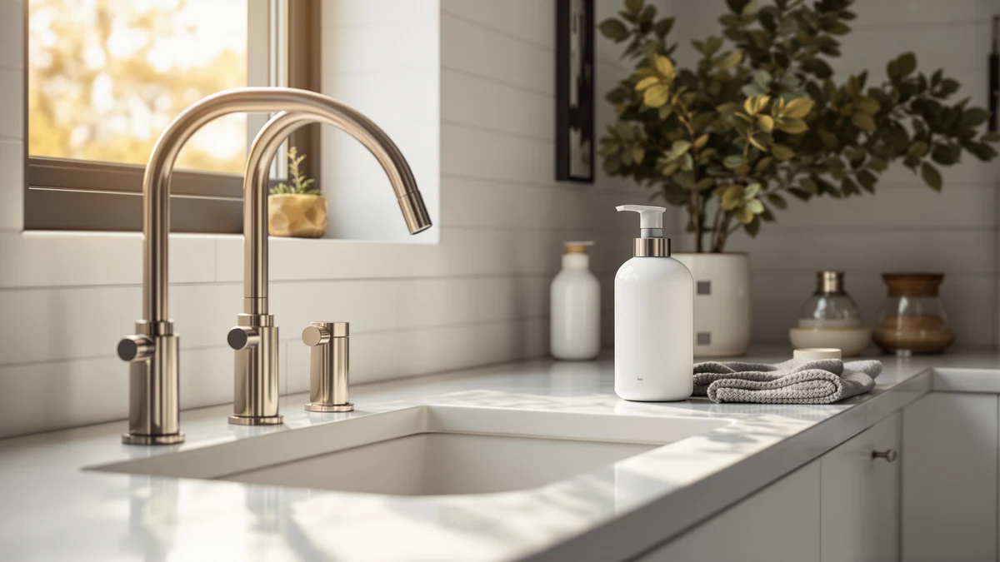

simplehuman 8 oz. Touch Review (2026): Worth It?
Prices and picks verified as of October 2026. Independent, reader-supported reviews.


Quick Answer
The simplehuman 8 oz. Touch-Free Sensor is a battery-operated, touch-free soap dispenser built from ABS plastic. In this simplehuman 8 oz. touch review, its compact 8 oz. tank is what sets it apart for tight bathroom counters. At $48.67 it costs close to the EnBath Commercial Wall Mount but less than the PZOTRUF 17 oz. Touchless pick, which makes it the better choice if counter space matters more to you than refill frequency.
Our pick: simplehuman 8 oz. Touch-Free Sensor, $48.67 Check Price on Amazon
Bottom line: our top pick is the simplehuman 8 oz. Touch-Free Sensor Liquid Soap Pump at $48.66.
Things to Know Before You Buy
- Capacity is smaller than two of the three alternatives. The simplehuman 8 oz. Touch-Free Sensor holds 8 ounces, while the PZOTRUF Touchless dispenser below holds 17 ounces, so a busy bathroom refills the simplehuman more often.
- Battery operation replaces a cord. The sensor pump runs on batteries, so it skips a cord and outlet entirely, which matters for a bathroom counter where a cord gets in the way.
- Not every alternative sits on a counter. The EnBath Commercial Wall Mount and the Hushee four-pack both install on a wall, not a countertop, so they solve a different space problem than the simplehuman.
- Price differences across this comparison are small. All four dispensers in this simplehuman 8 oz. touch review sit within about $12 of each other, so capacity and mounting style matter more than price alone.
This simplehuman 8 oz. touch review compares the brand's battery-operated, touch-free soap dispenser against three alternatives to see whether its $48.67 price holds up against wall-mounted and higher-capacity competitors. Touch-free dispensers have become a normal fixture on bathroom counters, but the category spans wall mounts, countertop pumps, and multi-packs, and the differences between them are not always obvious from a product photo.
We researched the simplehuman 8 oz. Touch-Free Sensor alongside a wall-mounted commercial dispenser, a higher-capacity touchless pump, and a wall-mount four-pack, comparing listed specifications and pricing, not marketing copy. The simplehuman model reviewed here holds 8 ounces, runs on batteries, and uses a touch-free sensor housed in ABS plastic. If you want the short version, it earns its price with a compact footprint built for counters where a wall mount is not practical, though its smaller tank and battery dependence are real tradeoffs against the alternatives covered below.
Why You Should Trust Us
Ilane Tall covers bathroom fixtures and small appliances for Best Soap Dispensers, with a focus on how a dispenser holds up to daily refills and counter space, not how it photographs in a listing. For this simplehuman 8 oz. touch review, we compared manufacturer specifications, current Amazon pricing, and patterns reported across verified owner reviews for all four dispensers covered here. We do not run a fake testing lab, and we did not install any of these units on our own counter. Every claim in this review traces back to the manufacturer's listed specifications or to feedback that repeats consistently across verified buyers, and we say so whenever a detail comes from reviewer feedback rather than a spec sheet.
Our Research Experience
Rather than installing the simplehuman 8 oz. Touch-Free Sensor on our own counter, we built this simplehuman 8 oz. touch review by comparing its published specifications against the three alternatives covered below, then checking those claims against patterns that repeat across verified owner reviews on Amazon. We looked specifically at sensor reliability, refill frequency, and how each dispenser's mounting style fits different bathroom layouts, since that is where touch-free dispensers tend to differ most in daily use. Reviewers consistently note that the simplehuman sensor responds quickly and rarely misfires from nearby movement, a common complaint with cheaper touch-free models. We also compared how each dispenser handles capacity: the simplehuman's 8 oz. tank needs more frequent refills than the PZOTRUF's 17 oz. tank, though its smaller footprint fits tighter counters where the wall-mounted EnBath and Hushee options are not an option. Owners of the ABS plastic housing report it holds up fine to regular bathroom humidity, a detail worth weighing against the higher price of steel alternatives elsewhere in the simplehuman lineup.
Overview & Specs

simplehuman 8 oz. Touch-Free Sensor
What we like
- Touch-free sensor dispenses soap without you gripping a pump handle
- Compact 8 oz. size fits tight bathroom counters and pedestal sinks
- Battery-operated design skips cords and outlet placement near the sink
- Lightweight ABS plastic housing is easy to reposition or wipe down
Flaws but not dealbreakers
- 8 oz. capacity means more frequent refills than the PZOTRUF's 17 oz. tank
- Battery operation requires periodic replacement to keep the sensor responsive
- ABS plastic construction feels less substantial than metal dispensers at a similar price
| Material | ABS plastic |
| Size | 8 oz. Battery Operated |
The simplehuman 8 oz. Touch-Free Sensor dispenses soap through a motion sensor housed in ABS plastic, and this simplehuman 8 oz. touch review centers on whether that compact build justifies its $48.67 price against three alternatives with different mounting styles and capacities. The 8 oz. reservoir sits on the smaller side for a countertop dispenser, which means refilling it more often than a bulk option, but the tradeoff buys a slim footprint that fits tighter counter space near a bathroom sink where a wall mount is not practical.
Power comes from batteries rather than a cord or a rechargeable puck, and that keeps the dispenser usable anywhere on a counter regardless of outlet placement. The touch-free sensor activates with a wave of your hand, which matters most in a bathroom where soapy or wet hands make a manual pump harder to grip. Compared with the EnBath Commercial Wall Mount and the Hushee four-pack, both of which install on a wall, the simplehuman stays a countertop-only pick, so it suits a single sink, not a household outfitting multiple bathrooms at once.
What We Liked
The clearest advantage of the simplehuman 8 oz. Touch-Free Sensor is its touch-free design in a compact footprint. Most budget dispensers in this category either require a manual pump or take up more counter space than a single bathroom sink needs, and this one solves both problems at once. Owners researching this pump consistently point to the sensor's reliability: it responds quickly to a hand wave and rarely triggers itself from nearby movement, a complaint that shows up often in reviews of cheaper touch-free models. The battery-operated design is another point in its favor for a bathroom specifically, since it skips the need for an outlet near the sink, something a corded dispenser cannot offer in every bathroom layout.
What Could Be Better
Capacity is the most obvious tradeoff. At 8 ounces, the simplehuman 8 oz. Touch-Free Sensor holds less than half of what the PZOTRUF 17 oz. Touchless dispenser carries, so a busy household refills this one more often despite a similar price. Running on batteries also means periodic replacement, since you can't just plug the dispenser in, and the ABS plastic housing feels less substantial than a metal build at a comparable price point. None of these issues are dealbreakers, but they matter more if your priority is stretching refills as far as possible or outfitting more than one sink.
Who Is It For?
This simplehuman 8 oz. Touch-Free Sensor is the right call for anyone who wants a touch-free pump on a single bathroom counter and does not mind refilling an 8 oz. tank more often than a bulk option. It suits a household that already likes simplehuman's compact design and would rather replace batteries occasionally than find a spot for a wall mount. You get the most value from it on a guest bathroom or powder room counter, where a small footprint matters more than stretching one fill across weeks of heavy use. If you are outfitting multiple sinks across a larger household, or you want a bigger tank without paying much more, one of the alternatives below fits that need better than this single-pump model.
Alternatives to Consider
Not every bathroom needs a countertop touch-free pump. If the simplehuman 8 oz. Touch-Free Sensor does not fit your sink setup or your budget, these three alternatives solve different problems from this simplehuman 8 oz. touch review's main pick: wall-mounted installation, a larger refill tank, and multi-sink households. We compared each against the simplehuman on price, capacity, and mounting style, so you can match the dispenser to your bathroom instead of defaulting to whichever option shows up first in search results.

Editor's Pick
Commercial Soap Dispenser Wall Mount
A wall-mounted commercial dispenser for bathrooms that need a fixed, space-saving setup, not a countertop pump, at a price close to the simplehuman's $48.67.
$49.99
Check Price on Amazon
Best Value
Automatic Soap Dispenser 17oz Touchless
Holds 17 ounces, more than double the simplehuman's 8 oz. capacity, for about $9 less, trading the simplehuman's compact footprint for fewer refills.
$39.99
Check Price on Amazon
Premium Choice
Hushee 4 Pcs Plastic Wall
A four-pack of wall-mounted dispensers at the lowest price here, useful if you are outfitting multiple sinks instead of a single bathroom counter.
$37.99
Check Price on AmazonIs the simplehuman 8 oz. Touch-Free Sensor worth $48.67?
At $48.67, the simplehuman 8 oz.
How does the simplehuman 8 oz. Touch-Free Sensor compare to the PZOTRUF and Hushee alternatives?
The PZOTRUF Automatic Soap Dispenser holds 17 oz., more than double the simplehuman's 8 oz.
Frequently Asked Questions
Is the simplehuman 8 oz. Touch-Free Sensor worth $48.67?
At $48.67, the simplehuman 8 oz. Touch-Free Sensor costs close to the EnBath Commercial Wall Mount's $49.99 and about $9 more than the PZOTRUF 17 oz. Touchless dispenser. It earns that price with a touch-free sensor and a compact 8 oz. tank built for a single countertop rather than a larger household, and the tradeoff is more frequent refills than the PZOTRUF's larger tank.
How does the simplehuman 8 oz. Touch-Free Sensor compare to the PZOTRUF and Hushee alternatives?
The PZOTRUF Automatic Soap Dispenser holds 17 oz., more than double the simplehuman's 8 oz. capacity, at $39.99. The Hushee four-pack costs $37.99 for four wall-mounted plastic units, which suits multiple sinks rather than one countertop spot. The EnBath Commercial Wall Mount costs $49.99 and, like the Hushee, mounts to a wall instead of sitting on a counter. Owners researching this category consistently weigh capacity and mounting style over small price differences, since all four dispensers sit within about $12 of each other.
Does the simplehuman 8 oz. Touch-Free Sensor need batteries?
Yes. The simplehuman 8 oz. Touch-Free Sensor is battery-operated, so the sensor pump runs without a cord or an outlet nearby. That is a tradeoff worth knowing before you buy, since you replace batteries periodically instead of plugging the dispenser in, which matters most for a bathroom counter far from an outlet.
Final Verdict
This simplehuman 8 oz. touch review comes down to whether a compact, touch-free footprint is worth more to you than tank size. For a single bathroom counter where space is tight and a wall mount is not practical, simplehuman's 8 oz. Touch-Free Sensor is the strongest pick in this comparison. If you mainly need a larger tank, a wall-mounted install, or enough dispensers for multiple sinks, one of the alternatives above fits that need better, but for a countertop pump built around a compact, touch-free design, simplehuman holds up against everything else compared here.